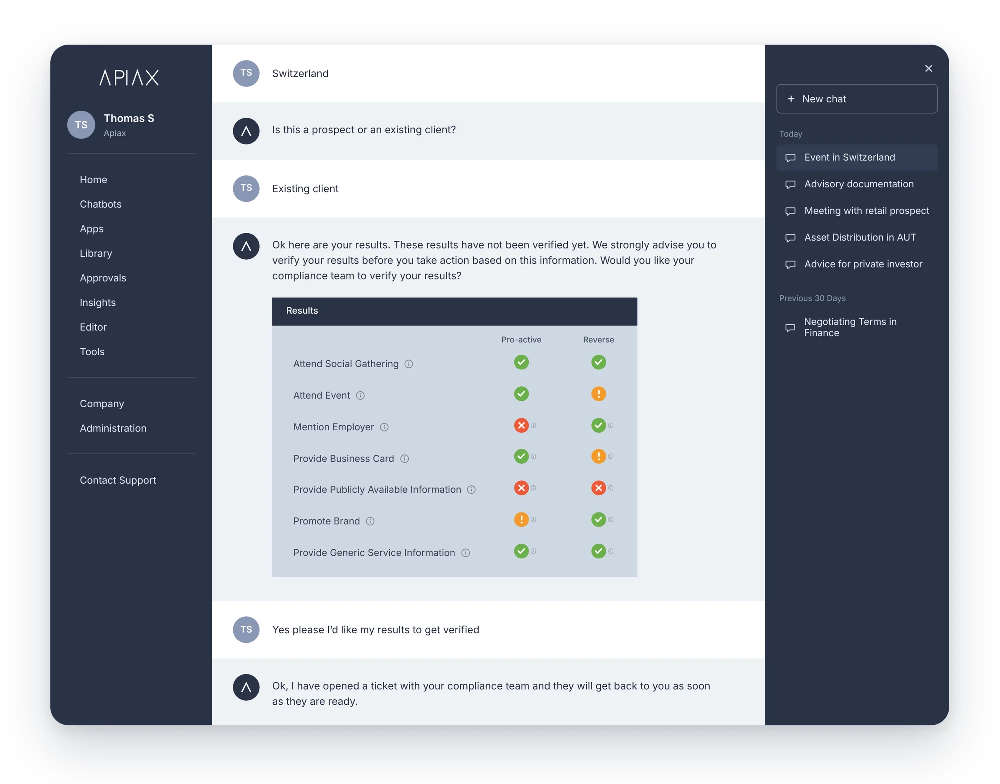
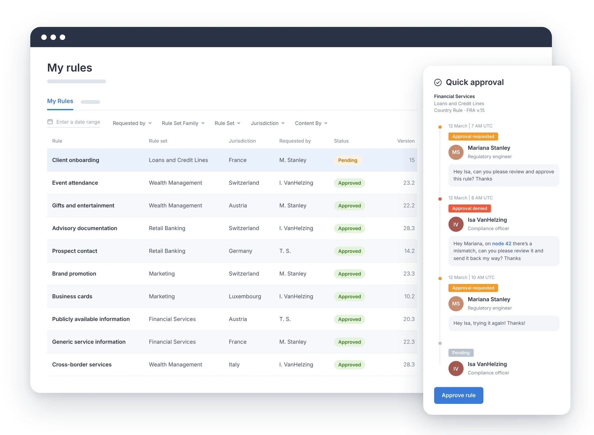

Apiax
At Apiax's, a RegTech company building software for highly regulated financial institutions, I was Lead Product Designer, partnering with Product, Engineering and policy experts.
I led design of its first AI-powered product, the AI Policy Assistant, turning dense regulatory content into clear flows for both technical and non-technical users. In the Raiffeisen POC the policy lookups were cut by ~89% (about 26,000 hours saved per year) and Compliance follow-ups by ~28% (about 1,000 hours), and it was also adopted by PostFinance.
Beyond the product, I cut design and development time by 20% by leading the implementation of a design system, which enabled smoother handoffs through new Product–Engineering communication practices. Led the UX side of the Microsoft partnership.
Business problem
Financial institutions struggle to give fast, precise answers to policy questions:
- • Policy frameworks are large and complex
- • Policies vary by department, legal entity, and jurisdiction
- • Employees wait hours or days for answers, and Compliance teams are pulled into repetitive follow-ups
In context: an institution with ~1,000 employees (Raiffeisen POC)
- • 180,000+ policy-related requests from employees per year
- • 3,700+ person-days per year spent clarifying policy questions across departments
- • ~5,000 policy-related follow-up requests per year for Compliance teams
- • 450+ person-days per year for Compliance to answer them
Business opportunity
- Let an AI handle routine policy questions instantly, without compromising on accuracy, verification, or auditability.
Objectives
& Success metrics
Cut employee time on policy queries
- KPI General workforce policy lookups
- Substantial reduction by automating answers
Free up Compliance teams
- KPI Compliance follow-up requests
- Routine questions answered by the assistant
Keep answers trustworthy
- KPI Verified, auditable answers
- Every answer traceable and verifiable
Reduce bottlenecks
- KPI Time to answer
- From hours or days → seconds
Target users
- • Employees across departments who need quick, reliable answers to policy questions
- • Compliance officers who verify answers and manage rules
- • Regulatory engineers who build and approve the rules behind the answers
Key design insight
- In a regulated environment, speed alone isn’t enough. Users need to know how far to trust an answer, and what to do when they need more certainty.
Role &
Responsibilities
As Lead Product Designer, I led the design of the core product experience, working with policy experts, product managers, engineers, sales, and Apiax’s leadership. I also led the Raiffeisen POC from a product-strategy position and the UX side of the Microsoft partnership.
Key responsibilities:
- • Translated dense legal and regulatory content into clear, actionable workflows
- • Led UX research, information architecture, interaction design, and usability testing
- • Designed the conversational experience, the one-step verification flow with Compliance, and the rule approval flow
- • Worked directly with Raiffeisen and PostFinance to shape the POCs
- • Aligned design decisions with Product, Engineering, and senior stakeholders
Process &
Key decisions
Transparent AI answers
- Every AI answer carries a disclaimer that AI can make mistakes (a legal requirement in the EU) and offers a path to verification, instead of presenting answers as final.
- WHY
- In compliance, a confident wrong answer is worse than no answer.
One-step verification by Compliance
- Users can send an answer to Compliance for verification in a single step. Verified or edited answers are added to a knowledge base, so the system recognises similar questions in the future.
- WHY
- Verification becomes a source of improvement rather than extra work, and routine questions gradually stop reaching Compliance.
Rule approval flow
- Rules go through a quick, structured approval flow between regulatory engineers and compliance officers.
- WHY
- Banks must monitor every action and decision, so the flow was designed for compliance, traceability, and audit.
Scope & Delivery
Platforms
- • Web application (conversational assistant, rule management, approvals)
Deliverables
- • Research and usability testing insights
- • Information architecture & user flows
- • Interaction and UI design for the core product
- • Case study deck
Business impact
General workforce policy lookups
- Reduced by ~89%, saving roughly 26,000 hours per year
Compliance team follow-ups
- Reduced by ~28%, saving roughly 1,000 hours per year
Combined
- Around 27,000 hours per year returned to the organisation
Governance & cost
- Faster, consistent, verified answers, better audit trails and risk mitigation, and lower operational costs without adding headcount
Key learnings
- • In regulated industries, trust is a design problem: transparency and verification matter as much as speed
- • Verification flows can double as a feedback loop that makes the product smarter
- • Designing for both expert and non-technical users means separating the answering experience from the governing experience
- • Close collaboration with policy experts, engineers, and leadership is what turns complex regulation into usable workflows

